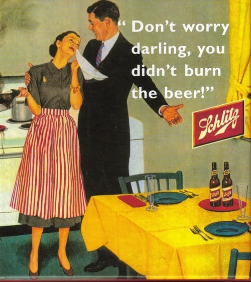
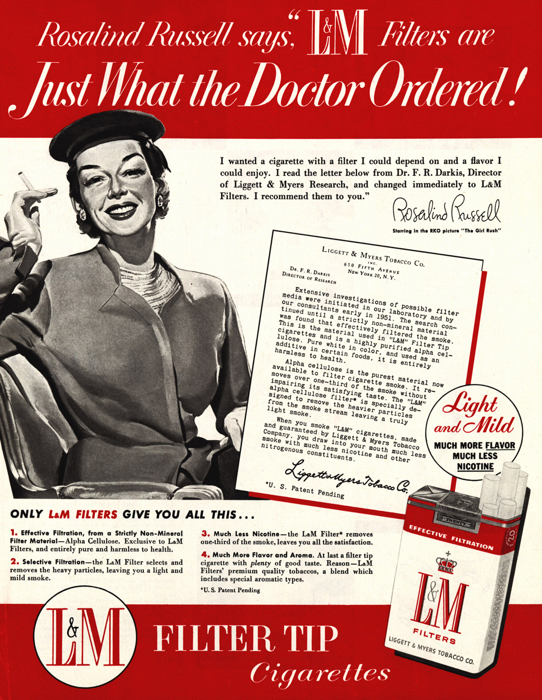
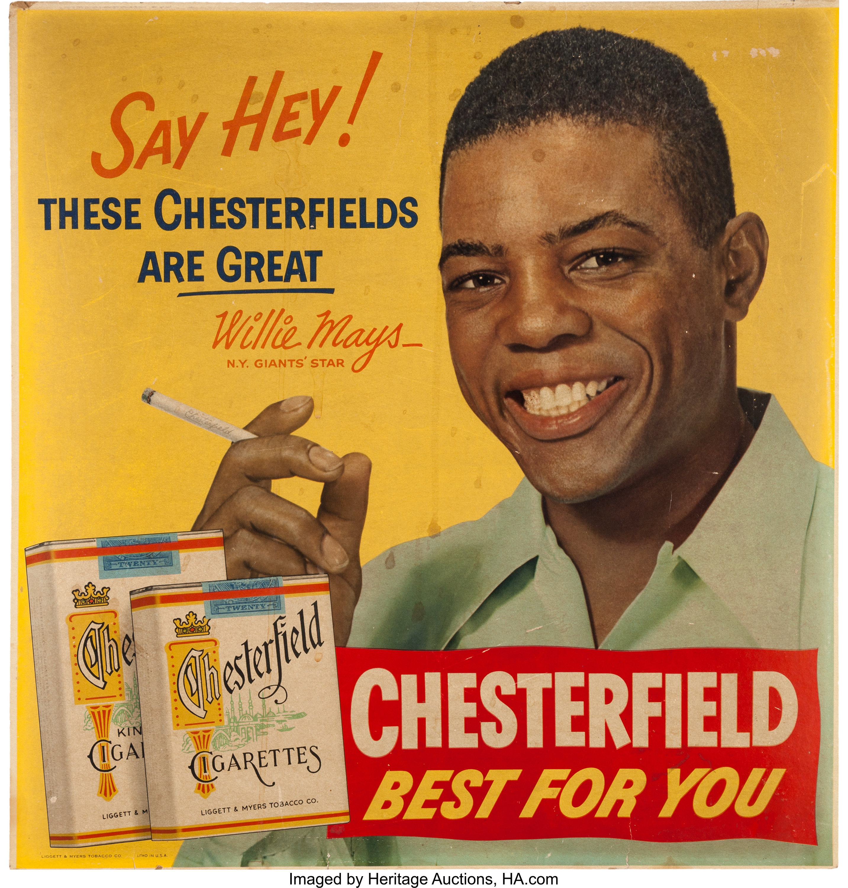

The United States in the 1950s experienced marked economic growth – with an increase in manufacturing and home construction amongst a post–World War II economic expansion. The Cold War and its associated conflicts helped create a politically conservative climate in the country, as the quasi-confrontation intensified throughout the entire decade. Fear of communism caused public Congressional hearings in both houses of Congress while anti-communism was the prevailing sentiment in the United States throughout the period. Conformity and conservatism characterized the social norms of the time. Accordingly, the 1950s in the United States are generally considered both socially conservative and highly materialistic in nature. The 1950s are noted in United States history as a time of compliance, conformity and also, to a lesser extent, of rebellion. Major U.S. events during the decade included: the Korean War (1950–1953); the 1952 election of Second World War hero and retired Army General Dwight D. Eisenhower as President and his subsequent re-election in 1956; the Red Scare and anti-communist concerns of the McCarthy-era; and the U.S. reaction to the 1957 launch by the Soviet Union of the Sputnik satellite, a major milestone in the Cold War.
Schlitz Beer advertisement from 1952.
Advertisment for L&M Cigarettes from 1951.
Advertisment for Chesterfield Cigarettes from 1952.
